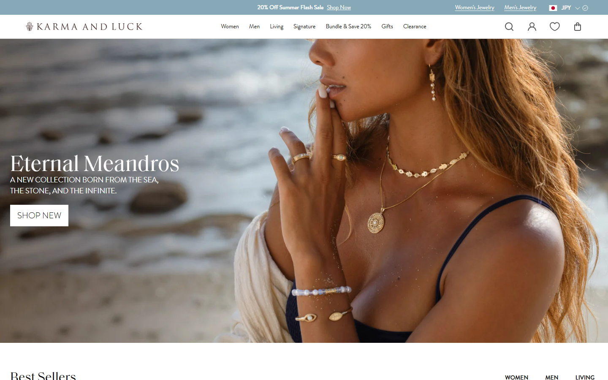
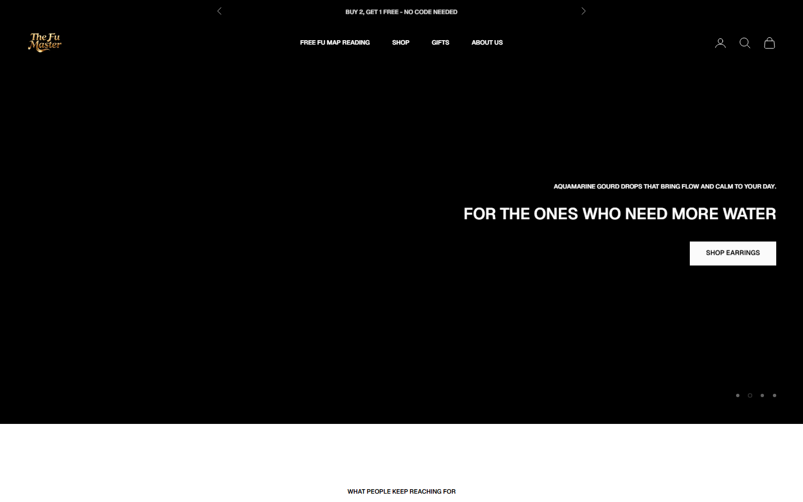
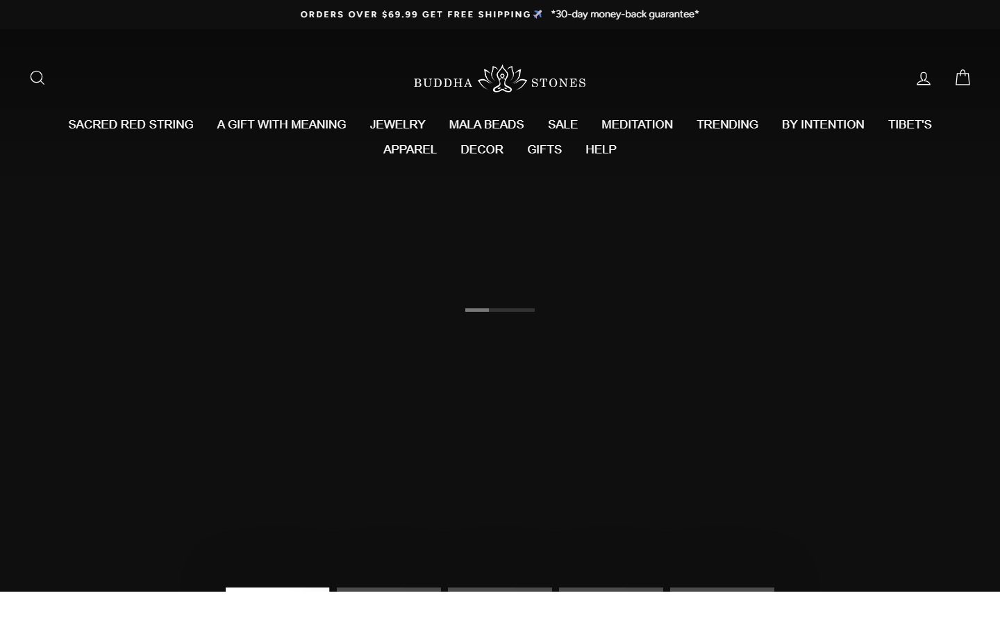
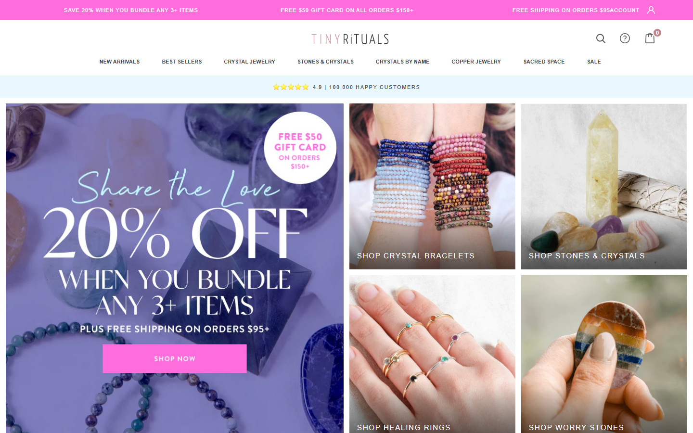

采样说明（守方法论）： 全部 Shopify 站首屏 hero 为懒加载轮播，headless 未触发出图（黑屏），属渲染伪影非站点缺陷；导航 / 顶部 banner / 文案均真实截到，为 CRO 分析主依据。
一、价格架构
| 站点 | 区间 | 中位 | P25–P75 | 判定 |
|---|
| TheFuMaster | $39.99–129.99 | $59.99 | $39.99–59.99 | 最干净的窄 premium 带 |
| Conscious Items | $1–119 | $34.45 | $29–49 | 低价大众 |
| Energy Muse | $2.37–14999 | $29.95 | $19.88–58.88 | 低锚 + 长尾天价 |
| Buddha Stones | $1–4399 | $36.59 | — | 低价走量 |
| Tiny Rituals | $0.75–1095 | $78.00 | $48–178 | 高端跨度大 |
| Karma & Luck | $0.99–3699 | $89.00 | $59–149 | premium + 高长尾 |
- TheFuMaster是全组价格心智最一致的：无 $1 垃圾、无天价长尾，P25-P75 仅 $40-60。这是 premium 资产，别为"广铺"引入低价 SKU 破坏它。
- 向上空间：均价 $54.99 < 中位 $59.99，可用套装/礼盒把 AOV 往 K&L 的 $89 靠。
二、导航 / 信息架构（CRO 第一痛点）
| 站点 | 顶级导航 | 模式 |
|---|
| Buddha Stones | 12+ 项（Sacred Red String / Gift / Jewelry / Mala / Sale / Meditation / Trending / By Intention / Tibet's / Apparel / Decor / Gifts / Help） | 广铺全暴露=杂但直给 |
| Karma & Luck | ~6 项（Women / Men / Living / Signature / Bundles / Gifts） | 精品克制，2109 SKU 藏在干净策展后 |
| TheFuMaster | 4 项（Fu Map / Shop / Gifts / About） | 顶层干净，但 Shop mega-menu 内爆 6 轴 |
核心洞察： K&L 的「精品感」= 导航克制 + editorial 呈现，不是靠少 SKU（它有 2109）。TheFuMaster顶层已干净，病灶在 mega-menu 6 轴笛卡尔积。修法 = 把 mega-menu 降到 2 主轴（意图 + 品类），五行/材质/符号/生肖降为集合页内筛选器。
三、视觉调性（实测截图）

Karma & Luck（标杆）：editorial 生活方式大片（沙滩模特叠戴金饰）+ 系列叙事 Eternal Meandros + 暖金调。产品在场景中，高级、aspirational——这是创始人想要的精品呈现。

TheFuMaster：暗底 + 金色 logo + 五行主题 hero（"FOR THE ONES WHO NEED MORE WATER" 水元素）+ 白色 CTA。调性方向对（高级暗金），但缺 K&L 式在身佩戴 editorial 大片。（hero 图为懒加载未出=渲染伪影）

Buddha Stones（广铺）：暗色 + 12 项大导航 + 顶 banner「$69.99 免运 + 30 天退款保证」。信息密度高、功能性、走量感。

Tiny Rituals：明亮简洁、水晶实拍 + AAA 品质主张。中高端策展感。
四、转化漏斗 / 信任信号
| 信号 | TheFuMaster | Buddha | K&L |
|---|
| 免运门槛 | Free ship >$75 | >$69.99 | 有 |
| 退换保障 | 未突出 | 30-day money-back（banner 明示） | 30 天（实为差评点） |
| 促销 banner | BUY 2 GET 1 FREE 常态 | Summer Sale | 20% Flash Sale |
| 站内评价 | Loox (780) | Loox + Stamped | 站内 widget |
| 第三方口碑 | Trustpilot 空白 | Trustpilot 3.7 | Trustpilot 3.1 |
CRO 发现
- 促销依赖：TheFuMaster 322 款里 318 款挂 B2G1 常态折扣 → premium 心智被侵蚀，还训练用户等折扣。建议改限时/会员/礼盒。
- 退换/保障未突出：VOC 显示尺寸是第一摩擦、竞品退换是差评重灾区。TheFuMaster应把"无忧退换 + 尺寸包换"做成明示信任标语=直接攻 K&L 差评。
- 尺寸引导缺失：VOC 27 处 small 抱怨。PDP 需加手围尺寸图 / 珠径说明 / 换尺寸政策。
- 第三方口碑空白：竞品都在被公开打分（K&L 3.1 / Buddha 3.7），TheFuMaster Trustpilot 无档案。主动经营=低成本建站外信任，且TheFuMaster真实体验大概率高于 K&L。
- 开箱/礼赠体验弱（VOC 包装 2% / 礼赠 6%）：CNY 生肖礼赠红利大，值得投礼盒包装 + 礼赠落地页。